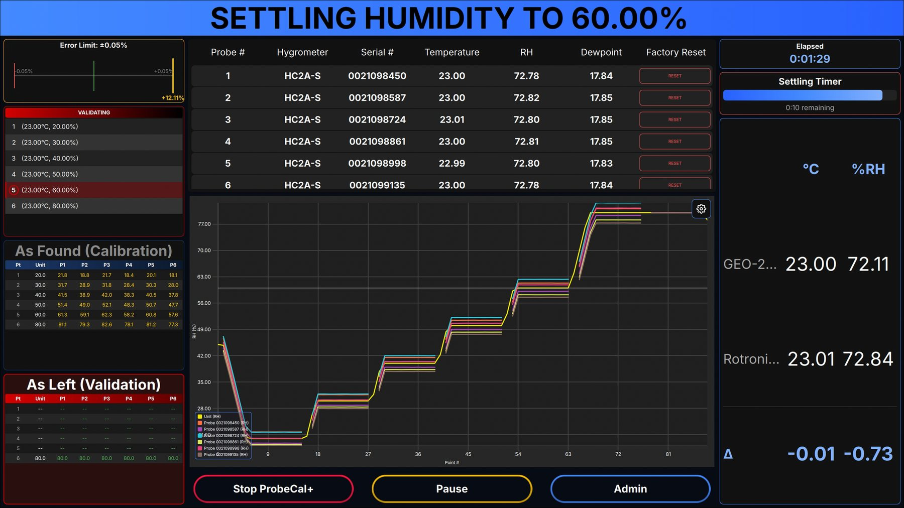
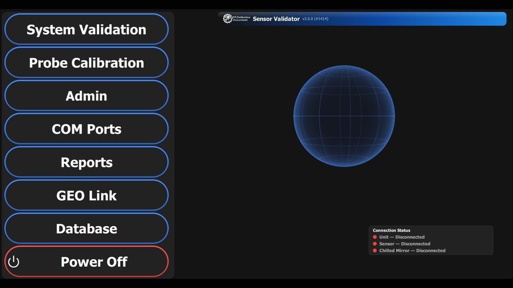
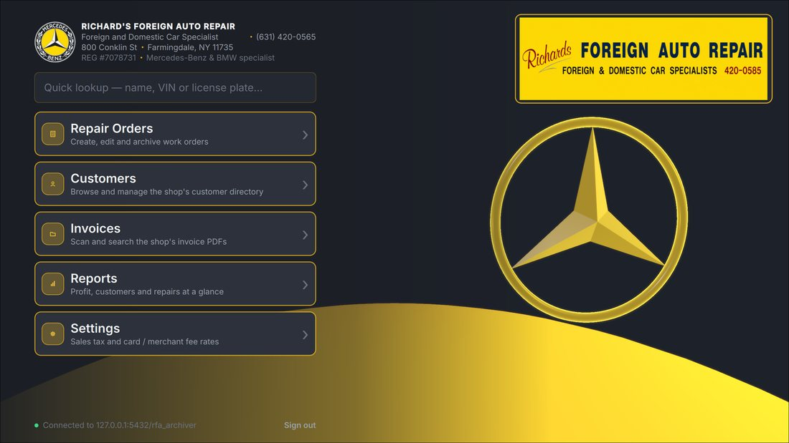
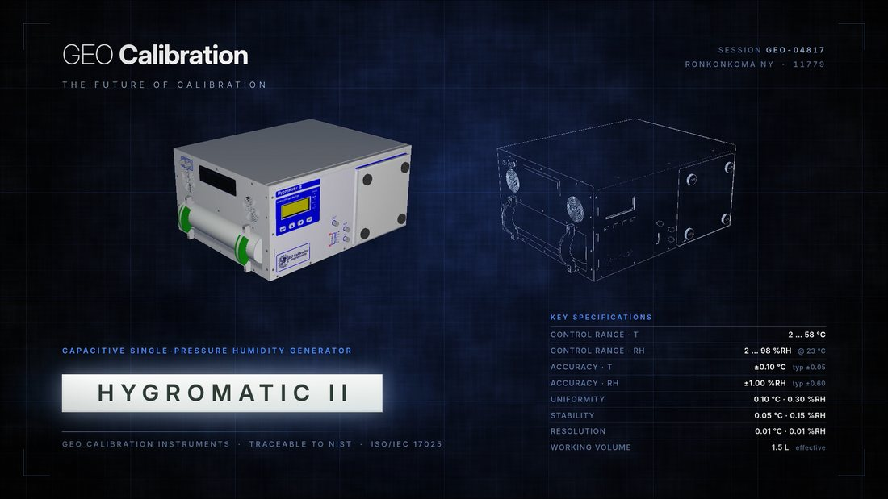
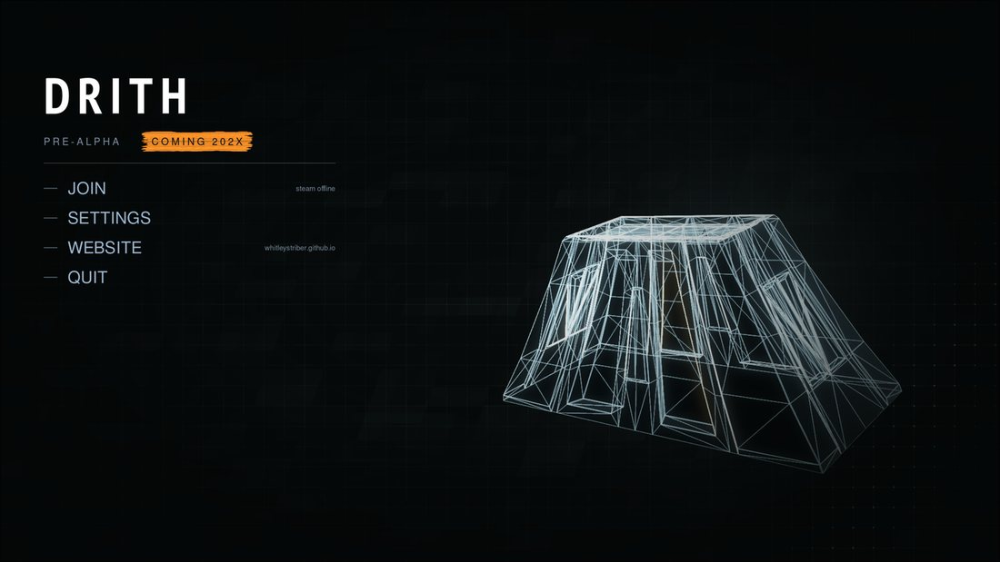
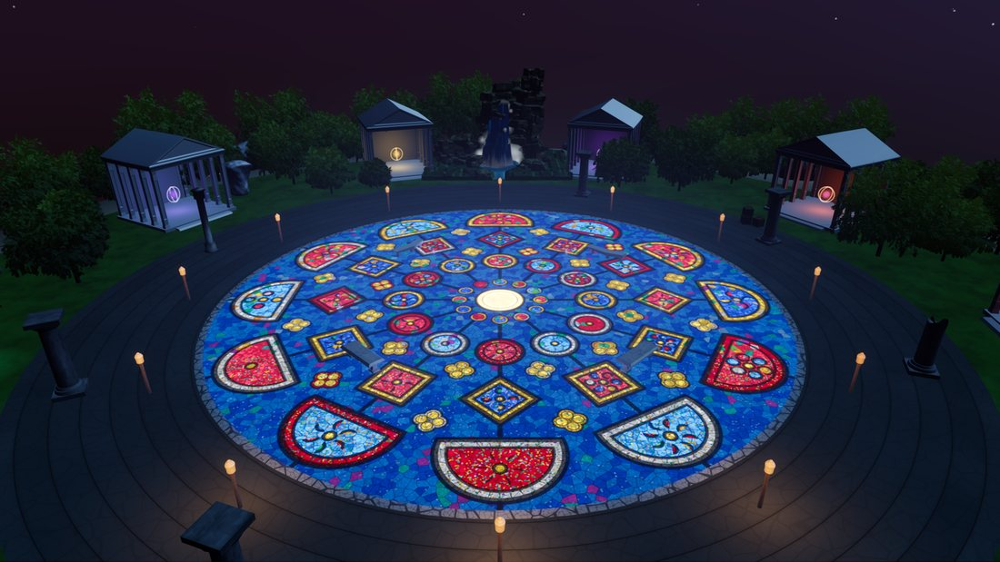
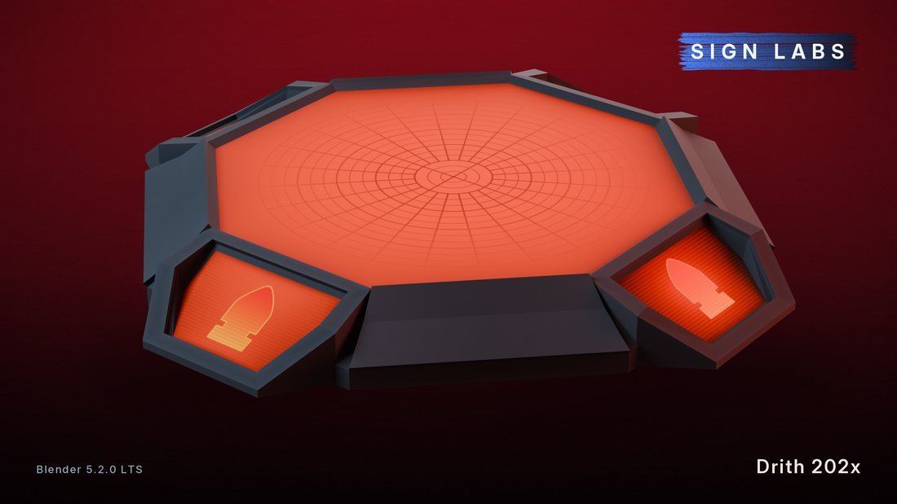

LEAD SOFTWARE ENGINEER · IT DIRECTOR · HEAD OF MARKETING
whitleystriber@protonmail.comCharlotte, NC631-524-1146gitlab.com/whitleystriber
Summary
One-man army — lead software engineer, systems administrator, and head of marketing. Programmer and systems administrator with ten years shipping commercial software on GNU/Linux. Sole developer of three cross-platform C++/Qt 6 products — instrument calibration in use by hundreds of customers, multi-channel sensor validation, and an internal ERP — each carried from architecture through release to documentation and support. Integrated PID control into EPICS with Brookhaven National Laboratory. Administers 100+ machines as IT Director alongside the development work, and applies agentic AI tooling to cut delivery cost.
Work History
Software Development Manager / IT Director / Head of Marketing
- Sole developer of GEO Validator X, a commercial cross-platform calibration product in use by hundreds of customers (C++/Qt 6, QML) — architecture, interface, real-time graphing, and Excel reporting.
- Sole developer of Sensor Validator, a commercial cross-platform product for multi-channel environmental validation across hundreds of sensors (C++/Qt 6).
- Sole developer of GEO System, the company's internal ERP (C++/Qt 6, PostgreSQL).
- Partnered with Brookhaven National Laboratory on PID controller integration into EPICS, the Experimental Physics and Industrial Control System used to operate particle accelerators and large-scale scientific instrumentation.
- Worked closely with our customers to provide bug fixes and custom solutions tailored for their laboratory requirements.
- Administered 100+ machines as IT Director — GNU/Linux servers & stations, virtualization, ZFS storage, and replicated backups for disaster recovery.
- Directed all software development and presented the full product suite at NCSL International 2026.
- Lead author of all published documentation — internal and customer-facing manuals covering every software product, hardware unit, and the PID controller.
- Head of marketing for the product line. Produced video content, fliers, documentation, and email campaigns. Led all artistic direction for the website as well as paper and digital fliers.
Lead Systems Administrator
- Managed IT and security systems for an enterprise aviation security company — server infrastructure, network security, and disaster recovery across production environments.
- Received notarized clearance for JFK Airport to plan, manage, and install security systems.
- Administered GNU/Linux routers and firewalls for 120+ clients: BIND, dhcpcd, nftables, and Snort IDS/IPS with deep packet inspection. Managed pfSense firewalls, OpenWRT routers, and many other custom network solutions for customers large and small.
- Managed the company-wide Active Directory domain — user provisioning, Group Policy, and access control across all office workstations.
- Supported small-business clients — public schools, security firms, restaurants — on open-source infrastructure, with tier 1–3 support for staff and client production systems.
LLC
- Taught senior citizens to use their computers and phones — safe web browsing, email, and troubleshooting.
- Produced 3D design, graphic design, and marketing work remotely.
Skills
Languages C, C++, C#, Python, QML, SQL, Bash/shell scripting, LaTeX
Frameworks Qt 6, Qt Quick/QML, EPICS, WebAssembly, Godot, Unreal Engine 5
Toolchain & Debugging GCC, Clang/LLVM, CMake, Make, GDB, Valgrind, strace/ltrace, perf, pkg-config
GNU/Linux Internals glibc, IPC, udev, D-Bus, Wayland/X11, systemd
Infrastructure Proxmox, QEMU/KVM, LXC, ZFS, BTRFS, LVM, TrueNAS/FreeNAS, FreePBX, Windows Server
Networking & Security Linux routing, TCP/IP, DNS (BIND), DHCP, nftables, Snort IDS/IPS, OpenSSH, PAM, Active Directory
Embedded & Hardware RISC-V, ATmega2560, ATmega328P, Arduino, Raspberry Pi, PID control, serial protocols
Data & Practice PostgreSQL, Git, backup & disaster recovery, technical documentation, LLM/agentic AI tooling
Digital Art Blender 3D modeling, UV unwrapping, 8-bit RGB texture painting, Krita/Blender sync plugin development
Projects
GEO Calibration Marketing CampaignHuman-made
Campaign for NCSLI Symposium 2026 — the world's largest trade show in measurement & metrology.
GEO SystemAI-assisted
Internal ERP for asset management, unit history, and calibration procedures. C++/Qt 6, PostgreSQL.
RFA_ArchiverAI-assisted
Customer database for mechanic shops: repair orders, invoicing, and record archiving.
Showcase

GEO Validator X
Sole developer. C++/Qt 6 and QML — real-time multi-probe graphing, as-found and as-left calibration tables, and Excel reporting.

Sensor Validator
Sole developer. C++/Qt 6 — multi-channel environmental validation.

RFA_Archiver
Repair orders, invoicing and record archiving for a mechanic shop.

GEO Calibration Campaign
NCSLI Symposium 2026.

Drith – Launcher
Interface in Godot, over the game's own geometry.

Drith – Overworld Map
Environment and lighting in Unreal Engine 5.

Drith – Gun Platform
Modelled and textured in Blender.